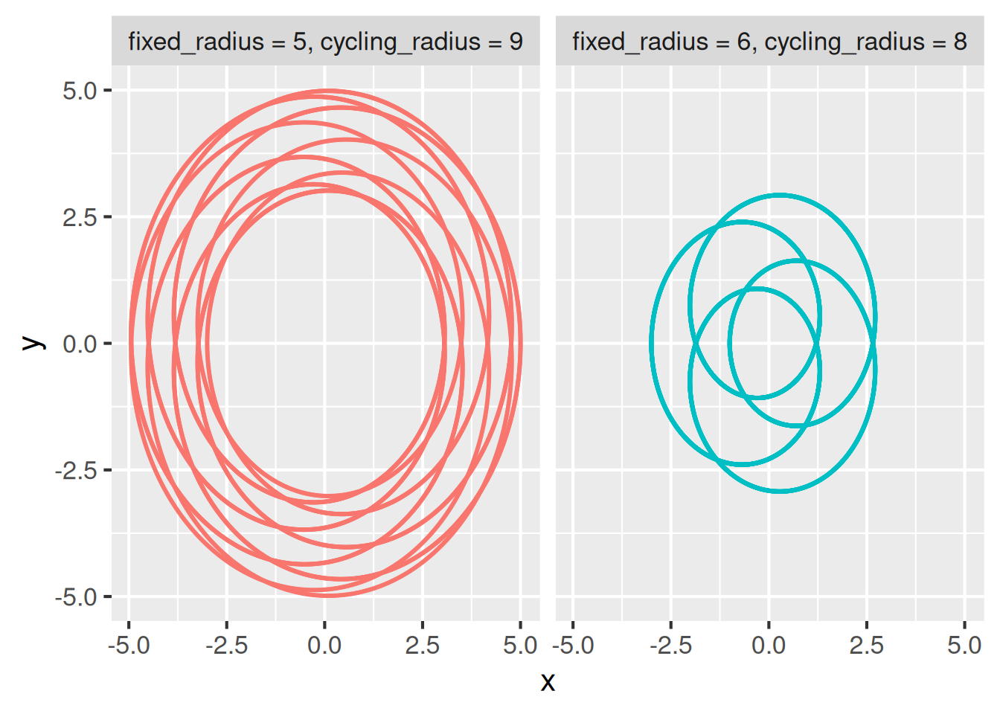

# _targets.R
library(ggplot2)
library(targets)
library(tibble)
# From https://github.com/wjschne/spiro/blob/87f73ec37ceb0a7a9d09856ada8ae28d587a2ebd/R/spirograph.R
# Adapted under the CC0 1.0 Universal license: https://github.com/wjschne/spiro/blob/87f73ec37ceb0a7a9d09856ada8ae28d587a2ebd/LICENSE.md
spirograph_points <- function(fixed_radius, cycling_radius) {
t <- seq(1, 30 * pi, length.out = 1e4)
diff <- (fixed_radius - cycling_radius)
ratio <- diff / cycling_radius
x <- diff * cos(t) + cos(t * ratio)
y <- diff * sin(t) - sin(t * ratio)
tibble(x = x, y = y, fixed_radius = fixed_radius, cycling_radius = cycling_radius)
}
plot_spirographs <- function(points) {
label <- "fixed_radius = %s, cycling_radius = %s"
points$parameters <- sprintf(label, points$fixed_radius, points$cycling_radius)
ggplot(points) +
geom_point(aes(x = x, y = y, color = parameters), size = 0.1) +
facet_wrap(~parameters) +
theme_gray(16) +
guides(color = "none")
}
list(
tar_target(fixed_radius, sample.int(n = 10, size = 2)),
tar_target(cycling_radius, sample.int(n = 10, size = 2)),
tar_target(
points,
spirograph_points(fixed_radius, cycling_radius),
pattern = map(fixed_radius, cycling_radius)
),
tar_target(
single_plot,
plot_spirographs(points),
pattern = map(points),
iteration = "list"
),
tar_target(combined_plot, plot_spirographs(points))
)15 Dynamic branching
Performance
Branched pipelines can be computationally demanding. See the performance chapter for options, settings, and other choices to optimize and monitor large pipelines.
15.1 Branching
Sometimes, a pipeline contains more targets than a user can comfortably type by hand. For projects with hundreds of targets, branching can make the code in _targets.R shorter and more concise.
targets supports two types of branching: dynamic branching and static branching. Some projects are better suited to dynamic branching, while others benefit more from static branching or a combination of both. Here is a short list of tradeoffs.
| Dynamic | Static |
|---|---|
| Pipeline creates new targets at runtime. | All targets defined in advance. |
| Cryptic target names. | Friendly target names. |
| Scales to hundreds of branches. | Does not scale as easily for tar_visnetwork() etc. |
| No metaprogramming required. | Familiarity with metaprogramming is helpful. |
15.2 About dynamic branching
Dynamic branching is the act of defining new targets (called branches) while the pipeline is running (e.g. during tar_make()). Prior to launching the pipeline, the user does not need to know the number of branches or the input data of each branch.
To use dynamic branching, set the pattern argument of tar_target(). The pattern determines how dynamic branches are created and how the input data is partitioned among the branches. A branch is single iteration of the target’s command on a single piece of the input data. Branches are automatically created based on how the input data breaks into pieces, and targets automatically combines the output from all the branches when you reference the dynamic target as a whole.
15.3 Example
To illustrate, consider the example pipeline below. It uses dynamic branching to generate random spirographs using code borrowed from W. Joel Schneider’s spiro package.1. A spirograph is a type of two-dimensional algebraic curve determined (in part) by parameters fixed_radius and cycling_radius. Targets fixed_radius and cycling_radius draw random parameter values, and the dynamic target points generates a spirograph dataset for each set of parameters (one spirograph per dynamic branch). Target single_plot plots each spirograph separately, and combine_plot plots all the spirographs together.
tar_make()
#> ▶ start target cycling_radius
#> ● built target cycling_radius [0.001 seconds]
#> ▶ start target fixed_radius
#> ● built target fixed_radius [0 seconds]
#> ▶ start branch points_940d58fc
#> ● built branch points_940d58fc [0.006 seconds]
#> ▶ start branch points_bf28fe5a
#> ● built branch points_bf28fe5a [0.012 seconds]
#> ● built pattern points
#> ▶ start target combined_plot
#> ● built target combined_plot [0.036 seconds]
#> ▶ start branch single_plot_805763e1
#> ● built branch single_plot_805763e1 [0.018 seconds]
#> ▶ start branch single_plot_ebcb8a12
#> ● built branch single_plot_ebcb8a12 [0.01 seconds]
#> ● built pattern single_plot
#> ▶ end pipeline [0.483 seconds]The final plot shows all the spirographs together.
tar_read(combined_plot)
This plot comes from all the branches of points aggregated together. Because target points has iteration = "vector" in tar_target(), any reference to the whole target automatically aggregates the branches using vctrs::vec_c(). For data frames, this just binds all the rows.
tar_read(points)
#> # A tibble: 20,000 × 4
#> x y fixed_radius cycling_radius
#> <dbl> <dbl> <int> <int>
#> 1 -2.46 -4.43 3 9
#> 2 -2.41 -4.46 3 9
#> 3 -2.37 -4.48 3 9
#> 4 -2.33 -4.50 3 9
#> 5 -2.28 -4.53 3 9
#> 6 -2.24 -4.55 3 9
#> 7 -2.19 -4.57 3 9
#> 8 -2.15 -4.60 3 9
#> 9 -2.10 -4.62 3 9
#> 10 -2.06 -4.64 3 9
#> # ℹ 19,990 more rowsBy contrast, target single_plot list of branches because of iteration = "list".
tar_load(single_plot)
class(single_plot)
#> [1] "list"
length(single_plot)
#> [1] 2Use the branches argument of tar_read() to read an individual branch or subset of branches.
tar_read(single_plot, branches = 1)
#> $single_plot_805763e115.4 Provenance
Recall our dynamic target points with branches for spirograph datasets. Each branch has columns fixed_radius and cycling_radius so we know which parameter set each spirograph used. It is good practice to proactively append this metadata to each branch, e.g. in spirograph_points(). That way, if a branch errors out, it is easy to track down the upstream data that caused it.2
tar_read(points, branches = 1) # first branch
#> # A tibble: 10,000 × 4
#> x y fixed_radius cycling_radius
#> <dbl> <dbl> <int> <int>
#> 1 -2.46 -4.43 3 9
#> 2 -2.41 -4.46 3 9
#> 3 -2.37 -4.48 3 9
#> 4 -2.33 -4.50 3 9
#> 5 -2.28 -4.53 3 9
#> 6 -2.24 -4.55 3 9
#> 7 -2.19 -4.57 3 9
#> 8 -2.15 -4.60 3 9
#> 9 -2.10 -4.62 3 9
#> 10 -2.06 -4.64 3 9
#> # ℹ 9,990 more rowstar_read(points, branches = 2) # second branch
#> # A tibble: 10,000 × 4
#> x y fixed_radius cycling_radius
#> <dbl> <dbl> <int> <int>
#> 1 1.90 3.61 7 2
#> 2 1.85 3.65 7 2
#> 3 1.79 3.70 7 2
#> 4 1.74 3.74 7 2
#> 5 1.69 3.78 7 2
#> 6 1.64 3.83 7 2
#> 7 1.59 3.87 7 2
#> 8 1.53 3.91 7 2
#> 9 1.48 3.96 7 2
#> 10 1.43 4.00 7 2
#> # ℹ 9,990 more rows15.5 Patterns
targets supports many more types of dynamic branching patterns.
map(): one branch per tuple of elements.cross(): one branch per combination of elements.slice(): select individual pieces to branch over. For example,pattern = slice(x, index = c(3, 4))branches over the third and fourth slices (or branches) of targetx.head(): branch over the first few elements.tail(): branch over the last few elements.sample(): branch over a random subset of elements.
Patterns are composable. For example, pattern = cross(other_parameter, map(fixed_radius, cycling_radius)) is conceptually equivalent to tidyr::crossing(other_parameter, tidyr::nesting(fixed_radius, cycling_radius)). You can test and experiment with branching structures using tar_pattern(). In the output below, suffixes _1, _2, and _3, denote both dynamic branches and the slices of upstream data they branch over.
tar_pattern(
cross(other_parameter, map(fixed_radius, cycling_radius)),
other_parameter = 3,
fixed_radius = 2,
cycling_radius = 2
)
#> # A tibble: 6 × 3
#> other_parameter fixed_radius cycling_radius
#> <chr> <chr> <chr>
#> 1 other_parameter_1 fixed_radius_1 cycling_radius_1
#> 2 other_parameter_1 fixed_radius_2 cycling_radius_2
#> 3 other_parameter_2 fixed_radius_1 cycling_radius_1
#> 4 other_parameter_2 fixed_radius_2 cycling_radius_2
#> 5 other_parameter_3 fixed_radius_1 cycling_radius_1
#> 6 other_parameter_3 fixed_radius_2 cycling_radius_215.6 Iteration
The iteration argument of tar_target() determines how to split non-dynamic targets and how to aggregate dynamic ones. Consider the following subset of the spirograph pipeline. Below, iteration is equal to "vector" by default.
list(
tar_target(fixed_radius, sample.int(n = 10, size = 2)),
tar_target(cycling_radius, sample.int(n = 10, size = 2)),
tar_target(
points,
spirograph_points(fixed_radius, cycling_radius),
pattern = map(fixed_radius, cycling_radius)
),
tar_target(combined_plot, plot_spirographs(points))
)For non-dynamic targets fixed_radius and cycling_radius, iteration = "vector" means that downstream dynamic targets branch over slices from vctrs::vec_slice(). In other words, the first branch of points is spirograph_points(vec_slice(fixed_radius, 1), vec_slice(cycling_radius, 1)), and second branch of points is spirograph_points(vec_slice(fixed_radius, 2), vec_slice(cycling_radius, 2)). Since fixed_radius is a numeric vector, vec_slice(fixed_radius, 1) is a vector of length 1. (But if fixed_radius were a data frame, then vec_slice(fixed_radius, 1) would be a one-row data frame). If iteration were equal to "list" for fixed_radius and cycling_radius, then the first and second branches would instead be spirograph_points(fixed_radius[[1]], cycling_radius[[1]]) and spirograph_points(fixed_radius[[2]]), respectively.
For dynamic target points, iteration = "vector" means all the branches are aggregated with vctrs::vec_c(). Since each branch of points is a data frame, aggregation is equivalent to dplyr::bind_rows() in this case. That is why, as previously shown, tar_read(points) returns a monolithic data frame. points becomes a monolithic data frame also when non-dynamic target combined_plot runs its command plot_spirographs(points). In other words, plot_spirographs(points) is equivalent to plot_spirographs(vec_c(points_940d58fc, points_bf28fe5a)), where points_940d58fc and points_bf28fe5a are the individual branches of points.3. If iteration were equal to "list" for points, then plot_spirographs(points) in combined_plot would be equivalent to plot_spirographs(list(points_940d58fc, points_bf28fe5a)).
iteration = "group" is for dynamic branching across dplyr::group_by() row groups of a data frame, and it is covered in the next section.
15.7 Branching over row groups
To branch over dplyr::group_by() row groups of a data frame, use iteration = "group" together with tar_group(). To demonstrate, consider the following alternative version of the spirograph pipeline. Below, we start with a monolithic data frame with all the spirographs together, and then we branch over the row groups of that data frame to create one visual for each dynamic branch.
# _targets.R
library(dplyr)
library(ggplot2)
library(targets)
library(tibble)
# From https://github.com/wjschne/spiro/blob/87f73ec37ceb0a7a9d09856ada8ae28d587a2ebd/R/spirograph.R
# Adapted under the CC0 1.0 Universal license: https://github.com/wjschne/spiro/blob/87f73ec37ceb0a7a9d09856ada8ae28d587a2ebd/LICENSE.md
spirograph_points <- function(fixed_radius, cycling_radius) {
t <- seq(1, 30 * pi, length.out = 1e4)
diff <- (fixed_radius - cycling_radius)
ratio <- diff / cycling_radius
x <- diff * cos(t) + cos(t * ratio)
y <- diff * sin(t) - sin(t * ratio)
tibble(x = x, y = y, fixed_radius = fixed_radius, cycling_radius = cycling_radius)
}
plot_spirographs <- function(points) {
label <- "fixed_radius = %s, cycling_radius = %s"
points$parameters <- sprintf(label, points$fixed_radius, points$cycling_radius)
ggplot(points) +
geom_point(aes(x = x, y = y, color = parameters), size = 0.1) +
facet_wrap(~parameters) +
theme_gray(16) +
guides(color = "none")
}
list(
tar_target(
points,
bind_rows(
spirograph_points(3, 9),
spirograph_points(7, 2)
) %>%
group_by(fixed_radius, cycling_radius) %>%
tar_group(),
iteration = "group"
),
tar_target(
single_plot,
plot_spirographs(points),
pattern = map(points),
iteration = "list"
)
)tar_make()
#> ▶ start target points
#> ● built target points [0.032 seconds]
#> ▶ start branch single_plot_d464a6a6
#> ● built branch single_plot_d464a6a6 [0.036 seconds]
#> ▶ start branch single_plot_4d5f6e9c
#> ● built branch single_plot_4d5f6e9c [0.031 seconds]
#> ● built pattern single_plot
#> ▶ end pipeline [0.41 seconds]tar_read(single_plot, branches = 1)
#> $single_plot_d464a6a6
The tar_group_by() function in tarchetypes makes this branching easier. Using tar_group_by(), the pipeline condenses down to:
list(
tar_group_by(
points,
bind_rows(
spirograph_points(3, 9),
spirograph_points(7, 2)
),
fixed_radius,
cycling_radius
),
tar_target(
single_plot,
plot_spirographs(points),
pattern = map(points),
iteration = "list"
)
)For similar functions that branch across row groups, visit https://docs.ropensci.org/tarchetypes/reference/index.html#dynamic-grouped-data-frames.
15.8 Branching over files
Dynamic branching over files is tricky. A target with format = "file" treats the entire set of files as an irreducible bundle. That means in order to branch over files downstream, each file must already have its own branch. Here is a pipeline that begins with spirograph data files and loads each into a different dynamic branch.
# _targets.R
library(targets)
list(
tar_target(paths, c("spirograph_dataset_1.csv", "spirograph_dataset_1.csv")),
tar_target(files, paths, format = "file", pattern = map(paths)),
tar_target(data, read_csv(files), pattern = map(files))
)The tar_files() function from the tarchetypes package is shorthand for the first two targets above.
# _targets.R
library(targets)
library(tarchetypes)
list(
tar_files(files, c("spirograph_dataset_1.csv", "spirograph_dataset_1.csv")),
tar_target(data, read_csv(files), pattern = map(files))
)15.9 Performance and batching
Dynamic branching makes it easy to create many targets. Unfortunately, if the number of targets exceeds several thousand, overhead may build up and the package may slow down. Temporary workarounds can avoid overhead in specific cases: for example, the shortcut argument of tar_make(), and choosing a pattern like slice() or head() instead of a full map(). But to minimize overhead at scale, it is better to accomplish the same amount of work with a fewer number of targets. In other words, do more work inside each dynamic branch.
Batching is particularly useful to reduce overhead. In batching, each dynamic branch performs multiple computations instead of just one. The tarchetypes package supports several general-purpose functions that do batching automatically: most notably tar_rep() and tar_map_rep() for simulation studies and tar_group_count(), tar_group_size(), and tar_group_select() for batching over the rows of a data frame.
The packages in the R Targetopia support batching for specific use cases. For example, in stantargets, tar_stan_mcmc_rep_summary() dynamically branches over batches of simulated datasets for Stan models.
The targets-stan repository has an example of custom batching implemented from scratch. The goal of the pipeline is to validate a Bayesian model by simulating thousands of dataset, analyzing each with a Bayesian model, and assessing the overall accuracy of the inference. Rather than define a target for each dataset in model, the pipeline breaks up the work into batches, where each batch has multiple datasets or multiple analyses. Here is a version of the pipeline with 40 batches and 25 simulation reps per batch (1000 reps total in a pipeline of 82 targets).
# _targets.R
library(targets)
list(
tar_target(model_file, compile_model("stan/model.stan"), format = "file"),
tar_target(index_batch, seq_len(40)),
tar_target(index_sim, seq_len(25)),
tar_target(
data_continuous,
purrr::map_dfr(index_sim, ~simulate_data_continuous()),
pattern = map(index_batch)
),
tar_target(
fit_continuous,
map_sims(data_continuous, model_file = model_file),
pattern = map(data_continuous)
)
)The pipeline uses code borrowed from the
spiropackage. The code in thespirograph_points()function is adapted from https://github.com/wjschne/spiro/blob/87f73ec37ceb0a7a9d09856ada8ae28d587a2ebd/R/spirograph.R under the CC0 1.0 Universal license: https://github.com/wjschne/spiro/blob/87f73ec37ceb0a7a9d09856ada8ae28d587a2ebd/LICENSE.md↩︎See also https://books.ropensci.org/targets/debugging.html#workspaces.↩︎
points_940d58fcandpoints_bf28fe5aare targets in their own right and can be inspected withtar_read(points_940d58fc)andtar_read(points_bf28fe5a)↩︎